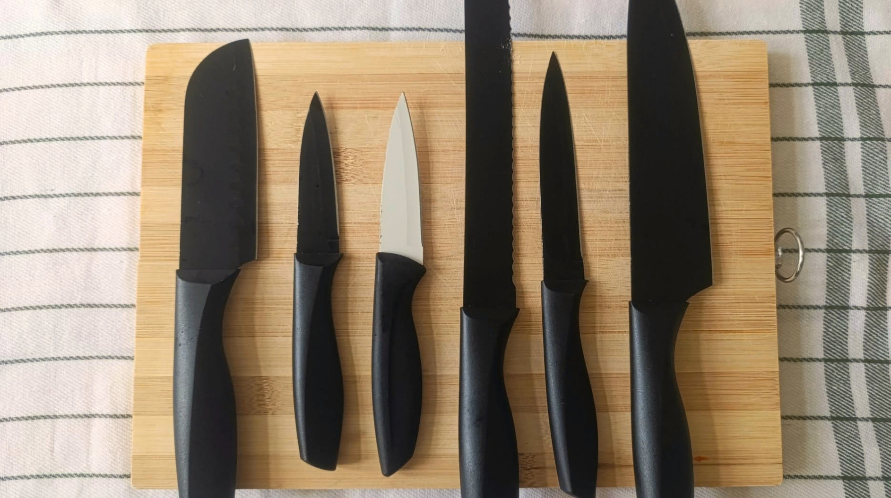
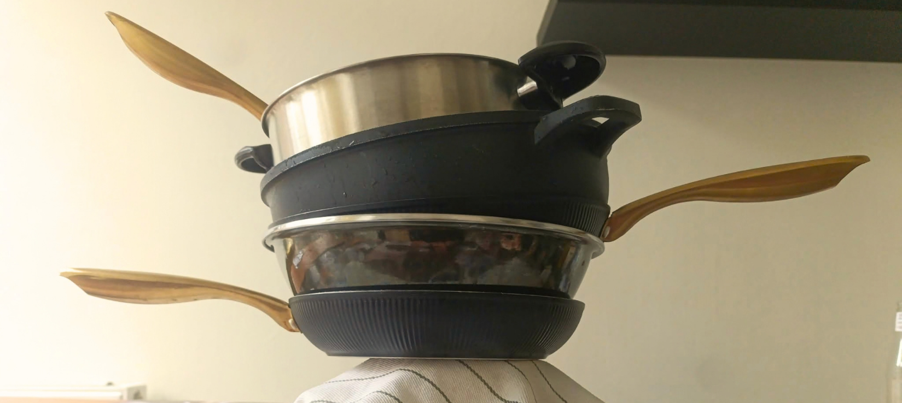
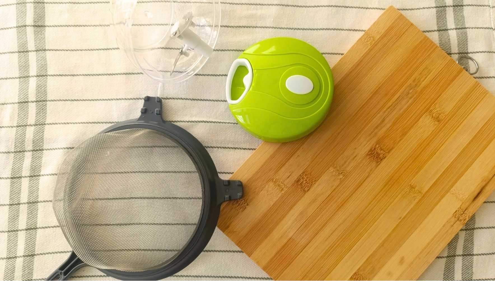

Kitchen Tools
One of the most important things in the kitchen is CHOOSING THE RIGHT TOOL.
It can feel overwhelming at first. Why is there a big pot and a small pot? Why are some pots made of stainless steel while others have a non-stick coating? There can be a lot to understand when you're new to cooking.
But don't worry! By reading this guide, you will learn the important things you need to know about kitchen tools, so you won't feel confused the next time you come across a gadget you don't recognize.
Knives

Knives are one of the most used and versatile tools in the kitchen. They can be used for many different tasks, from slicing and dicing to peeling and chopping. A good knife is one of the essentials you should have in your kitchen.
My recommendation is to buy one good-quality, versatile knife instead of spending money on lots of knives that you may never use. One well-chosen knife can handle many different tasks and is a great starting point for beginners.
So “How to choose a quality knife” here is your cheat sheet. Check these steps!!
- The Material: I would recommend stainless-steel blades because it last longer than other materials, resistant to rust and easy to clean
- Handle: The shape and material of the handle are important. If possible hold the knife before buying it and make sure it feels comfortable and not too heavy. I recommend plastic handle. Because it is easy to clean and requires less care.
- Thickness: Please don't buy a thick knife as a beginner its usually hard to maintain and usually more expensive. a medium thickness would be the best choice for you
Pots and Pans

Choosing the right pots and pans depends on what you plan to cook. There are lots of kind out there but you don't need to buy all of them.
My recommendation would be getting a medium sized, non sticky and a stainless steel pan. try to avoid scratching using wooden spoon for stirring would be a great choice.
For pots i would recommend buying two types of pot. First one being a regular cooking pot which you can cook almost everything with it . And other one being the pots with a thick bottom because thick bottom helps spread heat evenly so your food will cook more evenly and less likely to burn.
Useful Tools

So to make cooking easier there are tool that you can use. Here are some tools that are my recommendation
- Cutting board: It has lots of purposes. Gives you a clean and stable space for cutting, chopping, and preparing. I recommend a wooden cutting board. plastics can add microplastic to your food
- Colander: You will probably make pasta or need to wash and drain something, so having a colander comes handy.
- Manual blender: Sometimes you want your vegetables so small or you want to just cut ingredients faster, than this is a really good choice.